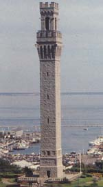

Sightseeing Sightseeing
Among the things to see on the Cape are lighthouses, windmills,
historical houses, museums, and a wild animal farm. Shown below
is Provincetown's Pilgrim Monument. The attractions are endless.
This site describes those that I can recommend from experience.
A wealth of information is available on Cape Cod sightseeing.
The Chamber of Commerce for each town advertises its attractions,
and many web sites feature the Cape. Here is a list of additional
resources.
Most towns have a lighthouse or two, although most are now retired
from service. You can read about them all at the Lighthouses
web site and Jay
Pulli's site. Nauset
Lighthouse gives tours. Most towns also have a windmill. The
ones in Orleans, Eastham, and Chatham are often open to tour, with
a knowledgeable volunteer guide.
|